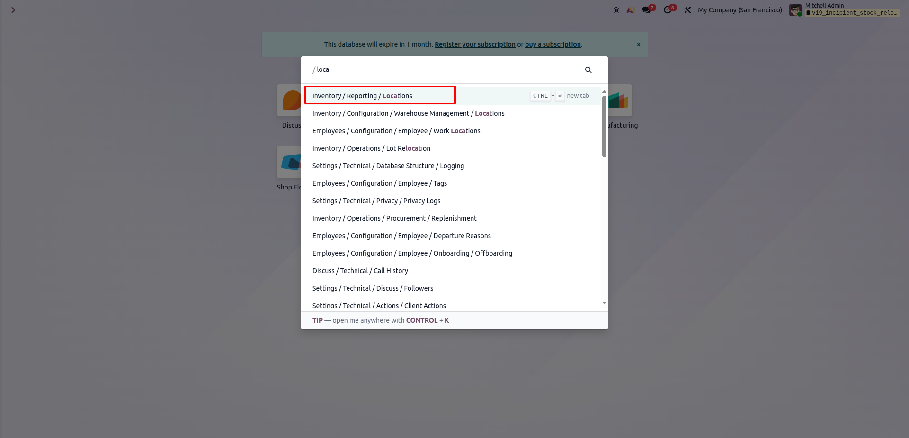
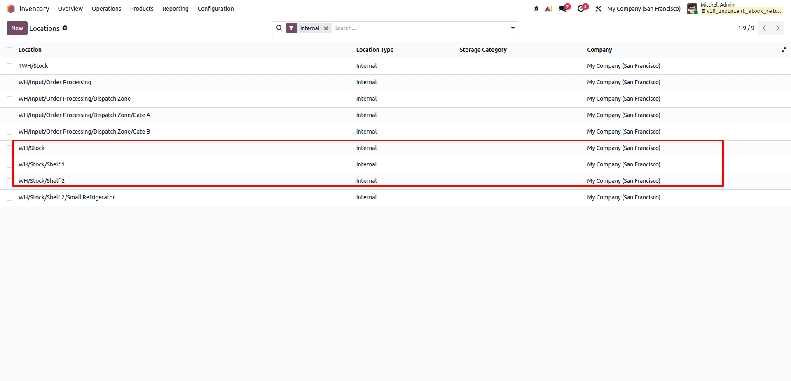
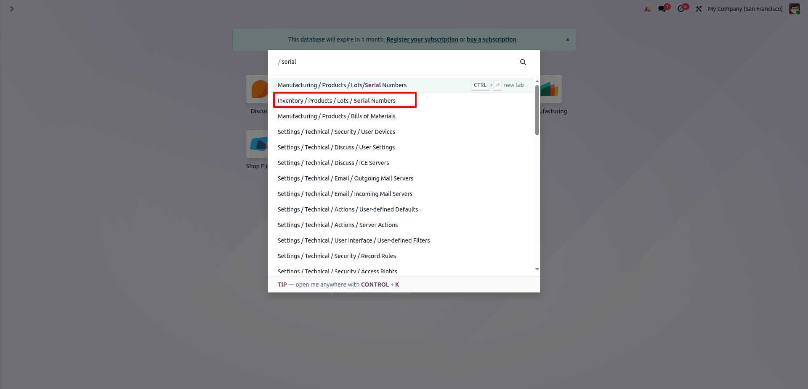
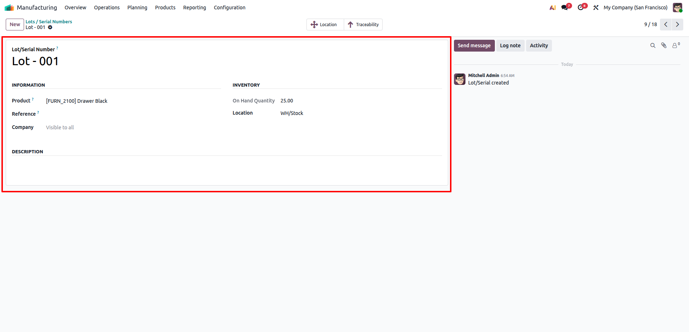
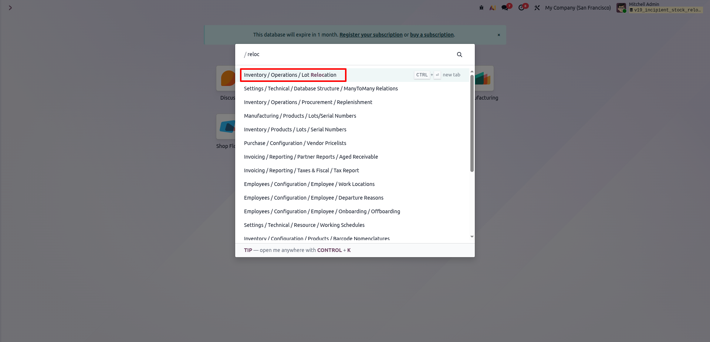
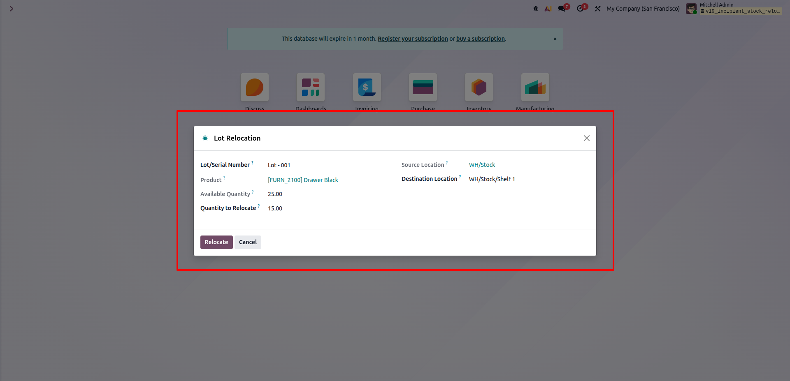
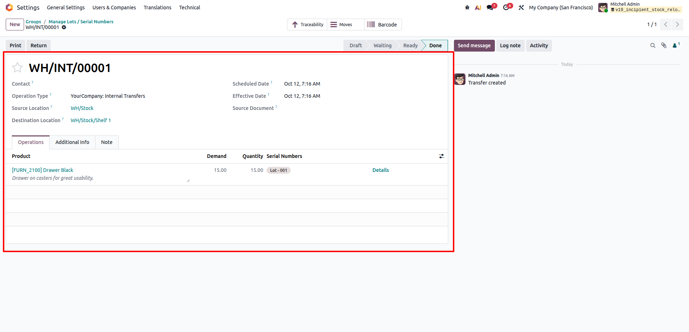
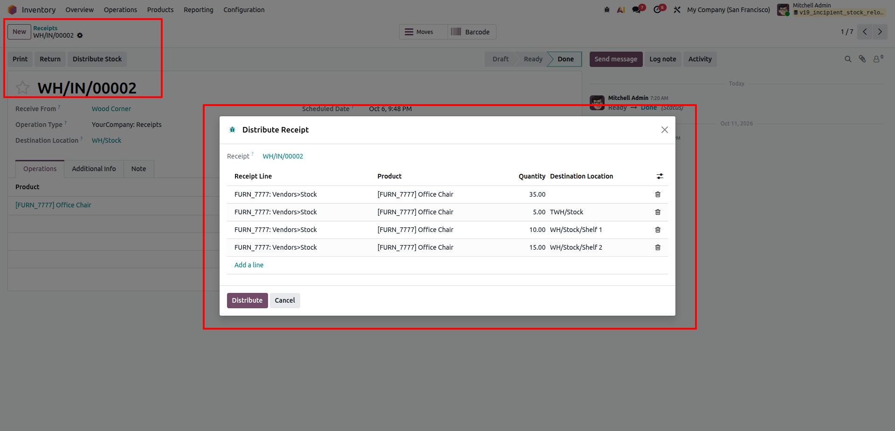
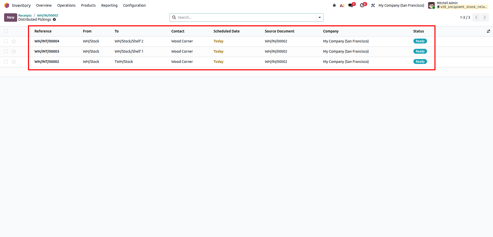

Internal Stock Relocation & Receipt Distribution
Incipient Warehouse & Logistics SuiteLot & Receipt-Based Internal Stock Relocation Wizards
Quickly relocate specific lot and serial quantities between warehouse locations with real-time stock validation, and seamlessly distribute completed purchase receipt lines across multiple storage locations into automated internal transfer pickings.
Need Setup Assistance?
Free pre-sales consultation and lifetime support for every installation.
Contact Technical SupportEngineered for Agile Warehouse Operations
Eliminate manual stock move creation and speed up put-away workflows with smart wizard automation
Lot-Level Relocation
Menu WizardPick any Lot/Serial number to auto-detect product and location. Relocate exact quantities with instant validation and immediate picking execution.
Receipt Distribution
Multi-Location SplitLaunch directly from validated purchase receipts to split delivered quantities across various internal storage locations in a single editable view.
Smart Grouped Pickings
Automated TransfersAutomatically groups distributed products by destination location, creating consolidated internal transfer pickings and assigning reserved stock.
The Inventory Movement Transformation
How Lot & Receipt Relocation Wizards solve standard Odoo stock movement bottlenecks
Default Odoo Limitation
- ✕ Relocating a specific lot requires manually creating an internal transfer, searching product quants, manually adding move lines, and assigning lots.
- ✕ After validating a large incoming shipment, warehouse operators must create multiple separate transfers to distribute goods across different aisles or bins.
- ✕ High risk of user error: operators can accidentally over-transfer quantities past available stock or specify duplicate/conflicting locations.
Streamlined Warehouse Agility
- ✓ Dedicated Lot Relocation wizard auto-detects source location and on-hand quantity, validating and executing the transfer in one step.
- ✓ Direct "Distribute Stock" button on completed receipts loads lines into an editable table to split items across multiple destination locations effortlessly.
- ✓ Intelligently consolidates moves by destination location, automatically creating grouped internal transfers and preserving complete origin traceability.
Comprehensive Feature Suite
12 Core capabilities engineered for fast, accurate warehouse put-away and stock relocations
Lot Relocation Wizard
Conveniently accessible under Inventory > Warehouse Management to quickly transfer specific lots and serial numbers between internal locations.
Automated Quant Detection
Selecting a lot instantly fetches the product, current internal source location, and real-time positive quantity on hand.
Available Quantity Guard
Enforces strict validation: users cannot relocate non-positive quantities or move more stock than is genuinely available in the source location.
Immediate Transfer Execution
Automatically creates an internal transfer picking, sets move lines, assigns the lot ID, and immediately validates the transfer.
Receipt Put-Away Action
Adds a visible "Distribute Stock" button directly in incoming stock pickings once in 'done' state for rapid post-receipt put-away.
Multi-Location Line Splitting
Split single or multiple receipt move lines across any number of distinct internal locations in a clean, editable grid view.
Received Quantity Bound
Prevents over-distribution by verifying that the total quantity distributed across lines never exceeds the actual received product quantity.
Intelligent Location Grouping
Groups distribution lines destined for identical storage locations into single unified pickings to avoid cluttered redundant transfers.
Automated Reserve & Assign
Automatically creates, confirms, and reserves inventory (`action_assign`) on all generated internal transfer pickings.
Complete Origin Traceability
Links generated internal pickings back to their source purchase receipt document name and supplier partner for complete auditing.
Multi-Company Isolation
Resolves internal operation types and warehouse stock pickings strictly within the active company's warehouse boundary.
Direct Window Views
Wizards return the newly created transfers immediately in dedicated form or list views, giving operators instant visibility and control.
Step-by-Step Visual Walkthrough
How Lot & Receipt-Based Stock Relocation Wizards operate in Odoo
Warehouse Locations Navigation
Quickly navigate to warehouse locations via Odoo search or reporting.
Use the command palette (`/loca`) or navigate to Inventory > Configuraton > Warehouse Management > Locations to inspect storage zones, warehouse racks, and shelf layouts before relocating stock.

Internal Storage Hierarchy
Review internal storage locations and shelf structures.
Inspect internal locations including main stock (`WH/Stock`) and specific shelves (`WH/Stock/Shelf 1`, `WH/Stock/Shelf 2`). Having proper sub-locations ensures organized stock segregation.

Access Lots & Serial Numbers
Quickly search and access tracked product lots and serial records.
Find lots and serial numbers using the command search (`/serial`) or via Inventory > Products > Lots / Serial Numbers to verify tracked item inventory.

Lot Inventory & Location Details
Check available on-hand quantities and current storage locations for the lot.
View lot details such as `Lot - 001` for product `[FURN_2100] Drawer Black`, verifying its current internal location (`WH/Stock`) and available on-hand quantity (`25.00`) before relocation.

Launch Lot Relocation Wizard
Open the dedicated wizard directly from Warehouse Operations.
Easily access the relocation wizard from Inventory > Operations > Lot Relocation or type `/reloc` in the search bar to launch the instant stock transfer popup.

Configure Relocation Quantity & Target
Auto-detected source location with real-time quantity validation safeguards.
Selecting `Lot - 001` auto-fetches the product, source location (`WH/Stock`), and available quantity (`25.00`). Set the relocation quantity (`15.00`) and destination location (`WH/Stock/Shelf 1`) with built-in validation preventing over-allocation.

Automated Internal Transfer Execution
Transfer is created, lot is assigned, and status is validated to Done automatically.
Clicking 'Relocate' creates the internal picking (`WH/INT/00001`), links the lot to move lines, confirms, and validates the transfer directly to 'Done' state, instantly opening the completed picking view.

Receipt Put-Away: Distribute Stock
Split received goods across multiple locations directly from validated receipts.
On any done purchase receipt (`WH/IN/00002`), click 'Distribute Stock' to launch the distribution wizard. Allocate quantities across multiple destination locations (`TWH/Stock`, `WH/Stock/Shelf 1`, `WH/Stock/Shelf 2`) with built-in quantity cap validation.

Smart Grouped Pickings Creation
Consolidated internal transfers automatically created and reserved per destination.
Clicking 'Distribute' groups lines by destination location, generates distinct internal transfer pickings (`WH/INT/00002`, `WH/INT/00003`, `WH/INT/00004`), confirms and reserves inventory, and displays them in a dedicated Distributed Pickings list view.

Frequently Asked Questions
Click any question below to expand or collapse details